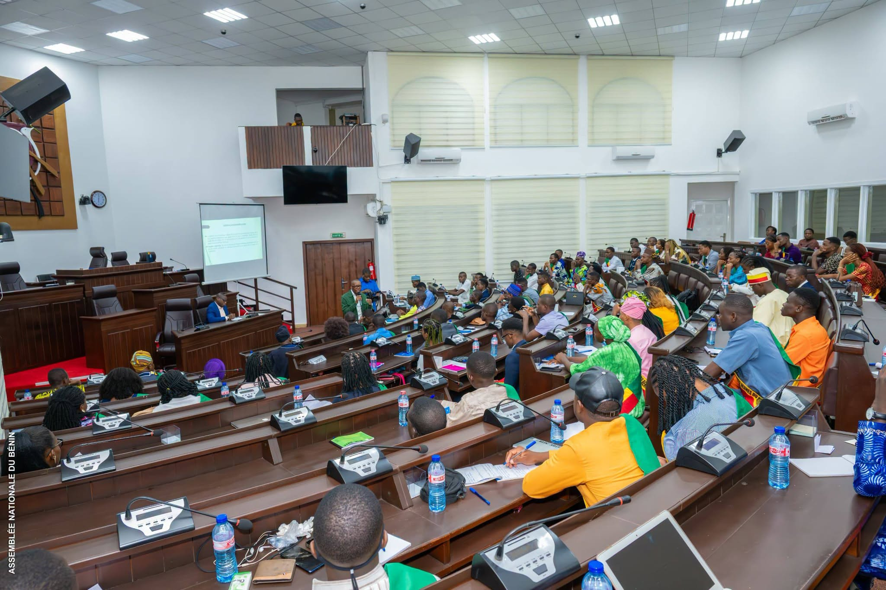

Impulsion francophone
Lors du 8ᵉ Sommet de la Francophonie tenu à Moncton, les États francophones ont été encouragés à mettre en place des Parlements des Jeunes afin de renforcer la participation citoyenne de la jeunesse.
Un cadre institutionnel de participation citoyenne, de formation démocratique, de représentation et d’expression de la jeunesse béninoise.
Le Parlement des Jeunes du Bénin est un cadre d’expression, de formation, de proposition et de participation citoyenne destiné aux jeunes béninois. Il permet à la jeunesse de mieux comprendre le fonctionnement des institutions, de développer une culture démocratique et de contribuer aux réflexions sur les grands enjeux nationaux.
Il ne vote pas les lois. Son rôle est de formuler des propositions, d’adopter des résolutions et d’émettre des recommandations sur des questions d’intérêt national, notamment celles liées à la jeunesse, aux femmes, aux adolescents et aux enfants.

La création du PJB s’inscrit dans un mouvement international d’implication des jeunes dans la vie démocratique, la paix et le développement.
Lors du 8ᵉ Sommet de la Francophonie tenu à Moncton, les États francophones ont été encouragés à mettre en place des Parlements des Jeunes afin de renforcer la participation citoyenne de la jeunesse.
Le Parlement des Jeunes du Bénin est officiellement créé le 1er septembre 2014 par la Décision n° 2014-15/AN/SGA/P/CCIP, sous l’égide du Professeur Mathurin Coffi NAGO, alors Président de l’Assemblée Nationale du Bénin.
La Décision n° 2021-065/AN/PT/SGA/CCIP du 1er juin 2021 renforce l’organisation interne, précise la sélection des membres et consolide le fonctionnement institutionnel du PJB.
La quatrième mandature, issue d’un concours national organisé avec l’appui technique de l’Office du Baccalauréat, a tenu sa session inaugurale en juin 2025. Le mandat en cours prendra fin en juin 2028.
Le Parlement des Jeunes du Bénin siège à l’Assemblée Nationale, au Palais des Gouverneurs à Porto-Novo. Ses travaux se tiennent dans l’hémicycle, ce qui traduit son ancrage institutionnel et son lien direct avec l’institution parlementaire nationale.
Il fonctionne à l’image de l’Assemblée Nationale, avec un bureau élu et des commissions techniques permanentes. Ses résolutions et recommandations sont transmises au Président de l’Assemblée Nationale et peuvent nourrir la réflexion des députés.
Le PJB concentre ses travaux sur les questions liées à la jeunesse, aux femmes, aux adolescents, aux enfants, à l’éducation, à l’insertion professionnelle, à la participation citoyenne et aux droits humains.
Promotion de l’éducation, de l’orientation professionnelle, de la formation citoyenne et du leadership des jeunes.
Renforcement du dialogue démocratique, de l’engagement communautaire et de la culture institutionnelle.
Promotion des droits des jeunes, des femmes, des adolescents, des enfants et de l’égalité des chances.
La sélection des membres du Parlement des Jeunes du Bénin est organisée par l’Assemblée Nationale avec l’appui technique de l’Office du Baccalauréat. Elle comprend l’étude des dossiers et un test écrit de culture générale, organisé sur l’ensemble du territoire national.
Cette procédure vise à garantir l’équité, la transparence et la qualité du recrutement des jeunes parlementaires.
Le Parlement des Jeunes du Bénin demeure un espace institutionnel de dialogue, de proposition et d’apprentissage démocratique au service de la nation.